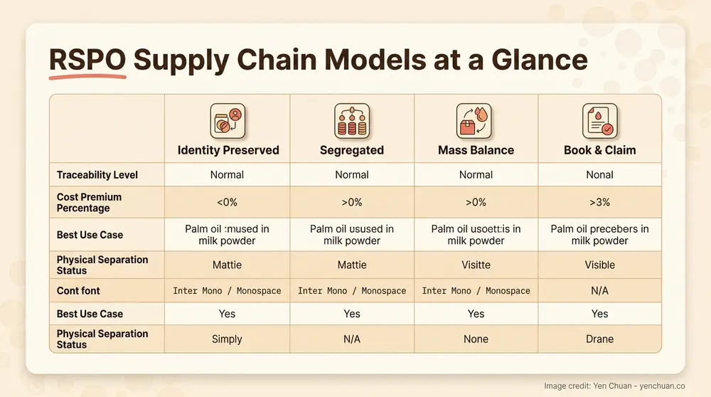
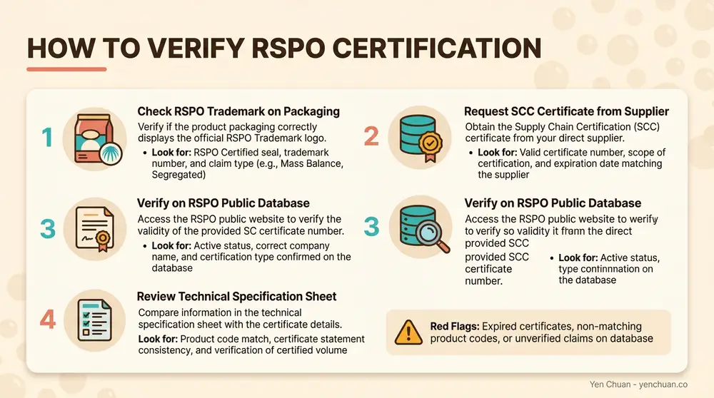

Articles / Business & sourcing
RSPO-Certified Milk Powder: B2B Sourcing Guide
2026-03-03 · Sourcing, Industry Trends

A growing number of boba tea shop owners are asking a simple question when they source their milk powder: where does the palm oil inside it actually come from? That question leads straight to RSPO certification — a sustainability standard that's reshaping how food-grade fats move through global supply chains. With the EU Deforestation Regulation (EUDR) taking effect in late 2025 and consumer demand for transparent sourcing climbing year over year, understanding RSPO-certified milk powder isn't optional anymore. It's a competitive advantage for any serious bubble tea operation.
What Is RSPO Certification — and Why Does It Matter for Milk Powder?
The Roundtable on Sustainable Palm Oil (RSPO) is a global, multi-stakeholder organization established in 2004. Its core mission is to make sustainable palm oil the norm by certifying production that meets strict environmental and social criteria. When palm oil is produced under the RSPO standard, deforestation is prohibited, High Conservation Value (HCV) ecosystems are protected, and labor rights along the supply chain are enforced.
So why does this matter for milk powder? Most non-dairy creamers and milk tea powders rely on palm oil or palm kernel oil as a key fat source. Palm-based fats give creamers their signature rich mouthfeel, smooth texture, and shelf stability — properties that make them ideal for boba tea. But conventional palm oil production is linked to tropical deforestation, habitat destruction, and carbon emissions that have drawn regulatory scrutiny worldwide.
RSPO certification provides a verified chain of custody showing that the palm oil in your milk powder was produced without clearing primary forests, without exploiting workers, and with measurable environmental safeguards in place.
The Scale of Palm Oil in the Beverage Industry
Palm oil is the world's most widely used vegetable oil, and the global market was valued at approximately USD 75.5 billion in 2025, projected to exceed USD 113 billion by 2035 according to Grand View Research. Within food manufacturing, palm-based fats dominate non-dairy creamer production because they deliver dairy-like richness at a fraction of the cost. For boba tea operations that go through 20-50 kg of creamer powder per week, the fat source isn't a minor detail — it's one of the largest ingredient cost drivers.
The Four RSPO Supply Chain Models
Not all RSPO certifications are equal. The RSPO defines four distinct supply chain models, and understanding the differences helps you evaluate what you're actually buying when a supplier claims "RSPO-certified."
| Model | What It Means | Traceability | Best For |
|---|---|---|---|
| Identity Preserved (IP) | Certified palm oil from a single identified mill, kept separate throughout the entire supply chain | Full traceability to one source | Premium brands requiring complete origin transparency |
| Segregated (SG) | Certified palm oil from multiple certified sources, kept separate from conventional oil | Full traceability to certified sources | Brands wanting 100% certified content with flexibility |
| Mass Balance (MB) | Certified and conventional palm oil mixed during processing, with volumes tracked | Volume-tracked, not physically separate | Cost-effective entry point for sustainability commitments |
| Book & Claim (Credits) | Manufacturer buys RSPO credits to support certified production, but physical oil may not be certified | No physical traceability | Supporting sustainable production while managing supply constraints |
For bubble tea ingredient buyers, Segregated or Mass Balance certifications offer the strongest balance of verified sustainability and practical supply chain logistics. Identity Preserved is the gold standard but commands a price premium of 5-15% over conventional equivalents. Book & Claim credits are the most accessible starting point but don't guarantee the physical product contains certified palm oil.

Why Boba Shop Owners Should Care About RSPO Right Now
Three converging forces are making RSPO certification increasingly relevant for bubble tea businesses — even small, single-location shops.
Regulatory Pressure Is Real
The European Union Deforestation Regulation (EUDR), which entered application in late 2025, requires companies placing palm oil products on the EU market to demonstrate that those products are deforestation-free. While this regulation primarily targets importers and large manufacturers, its ripple effects reach all the way down the supply chain. If your milk powder supplier sells into European markets, they're already adjusting their sourcing to comply. And similar regulations are under discussion in the UK, Australia, and parts of Asia.
For boba shop owners exporting products, using RSPO-certified ingredients proactively reduces the risk of supply disruption and simplifies compliance documentation.
Consumer Expectations Are Shifting
A 2025 survey by Innova Market Insights found that ingredient quality ranked as the top consideration for food and beverage purchases globally. Younger consumers — the core demographic for boba tea — are particularly attuned to environmental claims. A shop that can credibly communicate "our creamer uses sustainably sourced palm oil" gains a meaningful brand differentiator, especially in markets like Europe, North America, and Australia where sustainability messaging influences purchase decisions.
Supply Chain Resilience
RSPO-certified supply chains tend to be more transparent and better documented. This means more predictable lead times, clearer specifications, and suppliers who invest in quality management systems. For boba shop operators who've experienced sudden ingredient quality shifts or unexpected supply gaps, working with RSPO-certified suppliers can reduce volatility.
How to Identify RSPO-Certified Milk Powder
Verifying RSPO certification requires more than trusting a label. Here's a practical approach for procurement managers and shop owners:
Check the RSPO Trademark
Legitimate RSPO-certified products carry one of the official RSPO trademarks on their packaging or documentation. The trademark indicates which supply chain model applies (e.g., "RSPO Certified" for Segregated/IP, or "RSPO Credits" for Book & Claim). If a supplier claims RSPO certification but the trademark isn't visible, ask for their RSPO membership number and verify it on the RSPO website.
Request the Certificate
Every RSPO-certified operator holds a valid Supply Chain Certification (SCC) issued by an accredited certification body. This certificate includes the company name, certification scope, supply chain model, and expiry date. Reputable suppliers share this documentation without hesitation. If a supplier is evasive about providing their SCC certificate, that's a red flag.
Verify on RSPO's Public Database
The RSPO maintains a public database where you can search for certified companies by name, country, or certification number. This takes about two minutes and provides independent verification that doesn't rely on the supplier's own claims.
Evaluate the Specification Sheet
Beyond certification, check the technical specification sheet of the milk powder itself. Key parameters to confirm include fat content (typically 28-35% for standard non-dairy creamers), protein source, and the specific fat type listed (look for "RSPO-certified palm kernel oil" or similar language). A well-documented spec sheet from an RSPO-certified manufacturer will explicitly state the certification status of the fat component.

Cost Implications: Is RSPO-Certified Milk Powder More Expensive?
The honest answer is: it depends on the supply chain model and your purchase volume.
Identity Preserved and Segregated certified palm oil carry a premium because maintaining physical separation throughout the supply chain requires dedicated storage, transport, and processing infrastructure. For finished milk powder products, this translates to roughly a 5-15% price increase over conventional equivalents — though the gap has been narrowing as RSPO-certified supply expands.
Mass Balance certified products are typically priced closer to conventional alternatives, often within 2-5% of standard pricing, making them the most practical entry point for small and mid-sized boba operations.
For a boba shop using 100 kg of creamer per month, the difference between conventional and Mass Balance RSPO-certified product might amount to an additional USD 15-30 per month — a modest cost that's easily absorbed or offset by communicating your sustainability commitment to customers.
How to Offset the Cost
Several strategies can help manage the incremental cost of RSPO-certified ingredients. First, negotiate volume commitments with your supplier — annual contracts often come with better per-unit pricing than spot purchases. Second, consider that RSPO-certified suppliers frequently offer better quality consistency because their production processes are audited regularly. Third, use your sustainability sourcing as a marketing asset: menu callouts, social media content, and in-store signage about responsible ingredient sourcing can attract environmentally conscious customers willing to pay a modest premium.
What to Ask Your Milk Powder Supplier
When evaluating suppliers for RSPO-certified milk powder, these questions cut through marketing claims and get to the substance:
- Which RSPO supply chain model do you use? (IP, SG, MB, or Credits)
- Can you provide your current SCC certificate? (Should include certification body name, scope, and expiry date)
- What percentage of your palm oil/palm kernel oil is RSPO-certified? (100% is ideal; partial certification should come with a timeline for full transition)
- Which certification body audits your facility? (Look for recognized bodies like BSI, SGS, TÜV, or Control Union)
- Can you provide lot-level traceability documentation? (Critical for IP and SG models)
A supplier who can answer all five questions confidently and with documentation is a partner worth building a relationship with.
The Role of Milk Powder in Boba Tea Quality
Understanding why palm oil matters in milk powder connects directly to your drink quality. Non-dairy creamer powder — the most common base for milk tea in commercial boba operations — typically contains 25-35% fat by weight. That fat is almost always palm-based because palm kernel oil has a melting point and fatty acid profile that creates the creamy, full-bodied mouthfeel customers expect.
The quality of that palm oil directly affects your final product. Higher-grade, well-refined palm kernel oil produces a cleaner taste with no off-flavors, better dissolution in hot water, and more stable emulsion when mixed with tea. RSPO-certified palm oil tends to come from better-managed plantations with more consistent processing standards, which can translate to more uniform ingredient quality batch over batch.
For shops that use premium powders and syrups as their base, the fat quality in the creamer is the foundation everything else builds on.
Looking Ahead: RSPO and the Future of Boba Ingredients
The sustainable palm oil market is projected to grow from approximately USD 1.14 billion in 2026 to over USD 2.0 billion by 2036, according to Future Market Insights. This growth is driven by tightening regulations, expanding consumer awareness, and increasing retailer requirements for certified sustainable sourcing.
For the bubble tea industry specifically, this trajectory means RSPO certification will likely shift from a "nice-to-have" differentiator to a baseline requirement — especially for brands operating across multiple markets. Early adopters who establish RSPO-certified supply chains now will have a cost and relationship advantage as demand for certified ingredients increases.
Taiwan-based suppliers are well-positioned in this transition. Many Taiwanese food manufacturers have already integrated RSPO-certified palm oil into their production lines, driven by the island's strong food safety regulatory framework and export-oriented manufacturing culture. Working with a supplier that prioritizes ingredient transparency gives your business a head start.
Sources:
- Roundtable on Sustainable Palm Oil — Supply Chain Certification
- Grand View Research — Palm Oil Market Size & Growth Report
- Future Market Insights — Sustainable Palm Oil Market Forecast
- European Commission — EU Deforestation Regulation (EUDR)
- Innova Market Insights — Global Food & Beverage Trends 2025
About Yen Chuan Yen Chuan has been at the heart of Taiwan's bubble tea industry for over 20 years, supplying premium powders, syrups, tapioca pearls, and tea leaves to thousands of boba shops worldwide. With an in-house R&D lab and a commitment to quality ingredients, Yen Chuan is more than a supplier — we're your partner in the boba business.
Our sourcing team works directly with certified ingredient producers to ensure every powder, syrup, and topping meets the quality standards your customers expect — and the sustainability standards the market increasingly demands.
Looking for milk powder and creamer solutions with transparent, responsible sourcing? Browse our powder collection or get in touch with our ingredient specialists — we ship worldwide from Taiwan.
Frequently Asked Questions
Q: What is RSPO-certified milk powder? A: RSPO-certified milk powder is a non-dairy creamer or milk tea powder that uses palm oil or palm kernel oil verified by the Roundtable on Sustainable Palm Oil. This certification ensures the palm-based fat was produced without illegal deforestation, with respect for workers' rights, and following strict environmental standards. The certification covers four supply chain models with varying levels of traceability.
Q: Is RSPO-certified milk powder more expensive? A: RSPO-certified milk powder typically costs 2-15% more than conventional equivalents, depending on the supply chain model. Mass Balance certification adds the smallest premium (2-5%), while Identity Preserved certification commands the highest (5-15%). For most boba shops, the monthly cost difference is modest — often under USD 30 for 100 kg of creamer.
Q: How do I verify if my milk powder is really RSPO-certified? A: Check for the official RSPO trademark on packaging, request the supplier's Supply Chain Certification (SCC) certificate, and verify their membership on the RSPO public database at rspo.org. Reputable suppliers provide this documentation readily. If a supplier can't produce an SCC certificate or RSPO membership number, their certification claim may not be legitimate.
Q: Why does milk powder contain palm oil? A: Most non-dairy creamers use palm kernel oil as their primary fat source because it delivers rich, dairy-like mouthfeel at lower cost than dairy fat. Palm-based fats have ideal melting points for hot beverages, excellent shelf stability, and produce smooth emulsions when dissolved in water or tea — all critical properties for commercial bubble tea production.
Q: Does RSPO certification affect milk powder taste or quality? A: RSPO certification itself is a sustainability standard, not a direct quality grade. However, RSPO-certified supply chains tend to involve better-managed plantations and more rigorous processing standards, which often correlates with more consistent oil quality. Higher-quality palm kernel oil produces cleaner-tasting, better-dissolving creamer powder with fewer off-flavors.